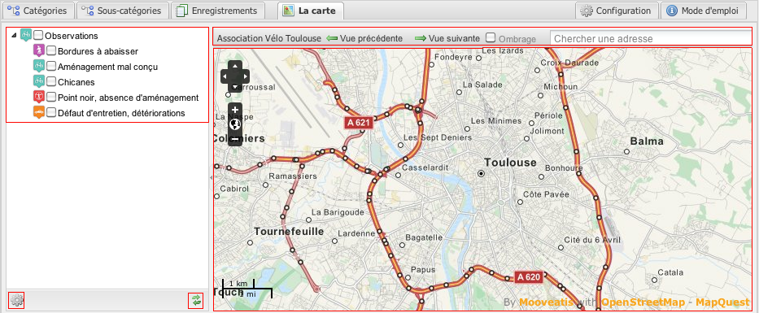
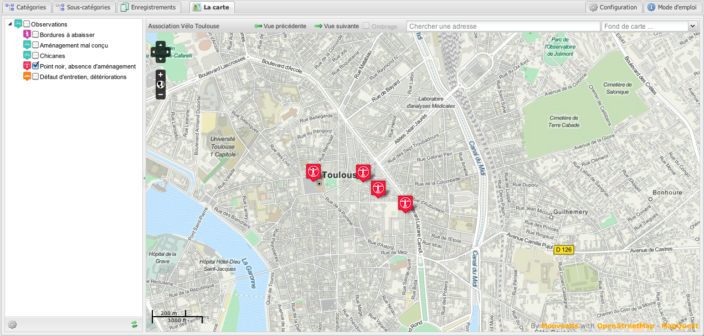
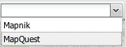
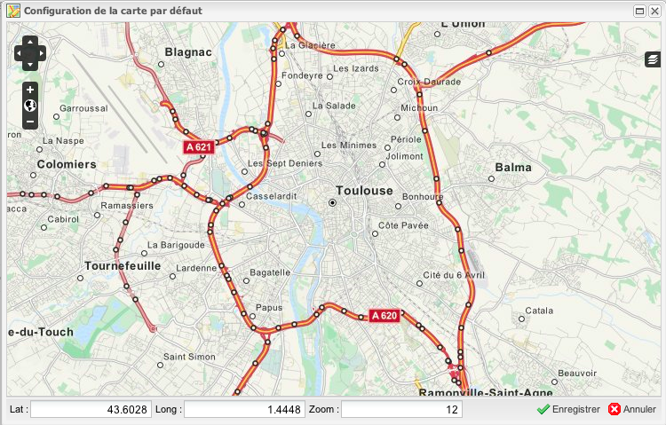

La carte d'administration
L'onglet 'Carte' est composée de 4 parties :
- un arbre de sélection des couches ;
- la carte ;
- deux boutons : un premier de rafraîchissement de l'arbre des couches et un deuxième de configuration du fond cartographique par défaut ;
- une barre d'outils : vue précédente, vue suivante, ombrage, recherche d'adresse et sélection du fond cartographique.

L'action de cocher une sous-catégorie dans l'arbre affiche les enregistrements associés sur la carte. Chaque enregistrement est représenté par un marqueur.
Il est possible d'ouvrir une infobulle reprenant les informations de l'enregistrement en cliquant sur le marqueur :

On peut modifier le fond cartographique en ouvrant le sélecteur de fond de carte :

On peut modifier le centre de la carte et le fond cartographique par défaut en utilisant le bouton de configuration :
